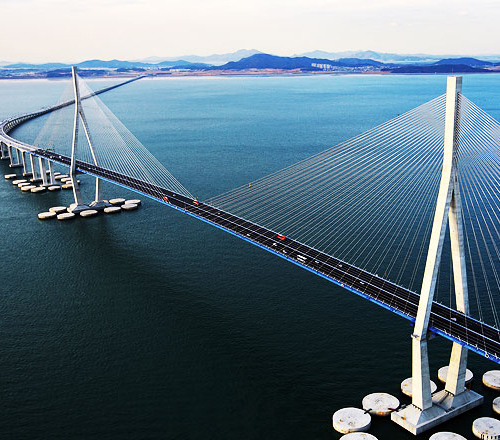
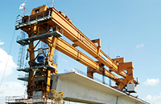
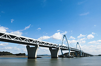

토목사업
Civil Infrastructure
- 기술과 역량을 바탕으로 새로운 공간 창조
- 토목사업은 자연의 터전에 새로운 공간을 창조하는 산업입니다. 삼성물산 건설부문은 도로, 교량, 항만, 공항 등 국가의 기반이 되는 기간시설에 주력하고 있으며, 중동과 동남아 시장 중심에서 해외 인프라 건설에 참여하고 있습니다.
- 인천대교
- 인천국제공항 연결 연륙교
- 대형 토목사업의 경쟁력 확보
- 삼성물산 건설부문은 지하철, 철도, 교량, 항만, 댐 등 대단위 사업에 참여하여 대형토목사업의 경쟁력을 확보하고 있습니다. 엔지니어링 역량을 바탕으로 설계에서 시공까지 일괄적으로 수행할 뿐만 아니라, 투자를 동반한 인프라 건설 및 운영에도 참여하고 있습니다. 사업을 수행하는데 필요한 전문인력을 확보하기 위해 장기적인 계획하에 기술개발 투자를 늘려감으로써 글로벌 토목사업에서 업계 수위로 도약하고 있습니다.

- 경험과 선진기술
- 삼성물산 건설부문은 세계 최초의 3차원 자정식 현수교인 영종대교 공사 및 세계 5위 규모의 사장교인 인천대교 공사를 성공적으로 수행하는 등 도로 및 교량분야의 세계적인 기술력을 보유하고 있으며, 국내 최장 국도터널인 능동터널을 시공하였습니다. 또한 항만 분야에서는 국내 최대 규모의 부산신항만 민자부두를 건설하는 등 세계 초일류 기업으로서의 도약을 위한 기반을 쌓아가고 있습니다.
